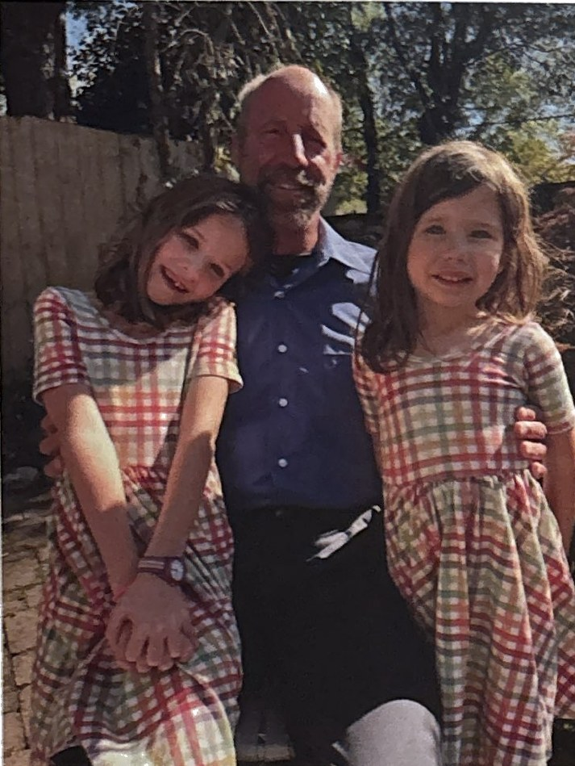

North Main Neighbors · December 2022 · pages 14 and 15
Resident Pens Holiday-Themed Book Inspired by His Grandchildren
By Lainey Veltri | Photos submitted by Michael LaPenna

Michael LaPenna’s passion for writing poetry and prose was inspired by his two young granddaughters, whose personalities have influenced the characters in one published book and another soon-to-be published one.
The North Main author took up writing about seven years ago after the birth of his first granddaughter, Catherine. The retired English school teacher of 34 years started writing poetry, mostly narrative poems, after Catherine was born.
“When her sister came along two years later, I gradually shifted to writing in prose, with both girls as the heroines of these fictional stories in which I tried to combine elements of adventure, mystery and humor, while at the same time, incorporating thought-provoking themes,” Michael explains. “Each tale, the published and the yet-to-be published, is, at heart, a coming-of-age story.”
Michael and his wife Patti moved to the Greenville area with their border collie, Nimbus, last November. They’d spent their whole lives in Massachusetts and the last 20 years or so in Gloucester. They moved to be closer to their son Paul, his wife, Nicole, and their two granddaughters, Catherine, 7 and Susanna Mae, 5. Michael’s son moved to Greenville nearly five years ago after the neurologist completed his residency in Indianapolis. The LaPennas also have two other grown children, Christin and Andrew.
“I have always loved literature, but never considered myself a writer,” Michael says. “But since beginning these books, I have discovered a great love for and satisfaction in writing.”
Writing fiction is hard work, challenging and demanding, “but very rewarding,” he adds. “When I’m not writing, I still read continuously, from mystery fiction to contemporary essays to classic spiritual works.”
When he’s not writing, Michael stays fit physically by running, weightlifting, playing pickleball and entertaining his granddaughters.
Michael’s first book, “Baby Jesus Is Missing,” was the first book to be published, but not his first piece of work written. He had to endure a litany of rejections for the poetry collections he’d penned before his first book was finally accepted, by Ambassador International Publishers in Greenville, not unusual for new writers entering the writer’s market.
“I took a chance and walked in with my manuscript in hand,” he says. “Two years later, “Baby Jesus Is Missing,” was released.”
The idea for the book came after Michael found a solitary piece of paper resting on a pew in a Florida church he attended. The paper touched on Mary’s sadness at seeing her son Jesus ignored and forgotten amid all the holiday preparations. At the time, his granddaughters had just relocated to Greenville, and so the leaflet he found that day set in motion the idea for the book “Baby Jesus Is Missing.” He decided it would take place in the Upstate and that his two granddaughters would inspire the characters in the narrative. To avoid being too specific, he renamed the small-town setting Reedy River, which would become the girls’ fictional hometown.
“The Offering” is Michael’s second book, also inspired by his granddaughters. It’s due to be released in early 2023. Like “Baby Jesus,” it contains adventure, mystery and humor as well as some thought-provoking themes. It’s set in the hills of Western Maine, where the two young stars of the book are visiting their grandparents at their log cabin in the middle of the woods. (The LaPennas actually do have an isolated cabin in Maine they’ve had for more than 30 years.) The book’s leading characters, once again, resemble and are influenced by his granddaughters’ personality traits. Other characters in the tales are a mixture of real people Michael has met and some born from his imagination.
“I have had a great deal of fun writing these books,” he says. “It is my hope that the stories have and will continue to be sources of enjoyment for readers of all ages not just young readers. I have written with children in mind, and thus, the young heroines and simple plots. But in my years of teaching, I have learned that children are much more capable than we often give them credit for.”
With that in mind, he kept the prose realistic with life’s challenges and moral dilemmas interwoven into the story’s fabric.
“But ultimately, each story reflects an ever-hopeful spirit and happy conclusion,” he says. “And in this too often cynical world around us these days, these elements in the books may appeal to older readers as well. And it is my hope that these stories can entertain while inviting the reader to ponder more deeply about the mystery and wonders of life.”
Even more fulfilling than having the published works, Michael says for him the tales will become lasting gifts for his granddaughters: somewhat of a legacy so to speak.
“And I can’t help thinking that the older they get, the more they will treasure these little tales starring themselves.”
Looking for a great Christmas gift for kids this year? You can purchase a copy locally of “Baby Jesus Is Missing” from Angel’s BookShoppe on North Pleasantburg Drive, and online at Christianbook.com, BarnesandNoble.com and Amazon.
Reprinted from North Main Neighbors, December 2022, with permission.